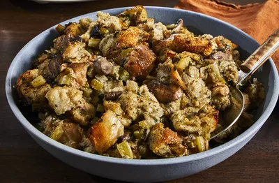

Slow cooker stuffing
Slow cooker stuffing
Ingredients
- Butter
- Vegetables
- Parsley
- Bread
- Spices amd Seasoning
- Broth
- Eggs
Steps
- Saute the Vegetables.
- Spoon the cooked vegetables over the bread and season.
- Moisten with broth, then add the eggs.
- Transfer the mixture to a slow cooker and cook.
This crockpot stuffing is an easy way to make extra stuffing for a large crowd-and it frees up stove soace because it cooks in a slow cooker. This recipe is designed for use in a standard 4-quart slow cooker and is very tasty and moist!